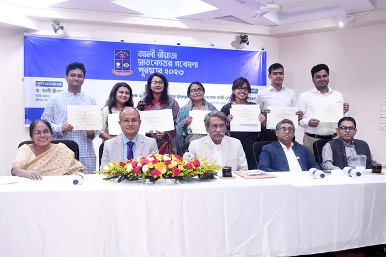
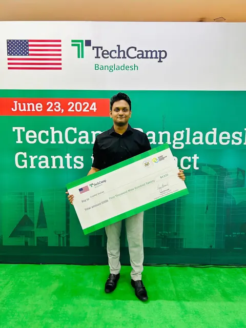
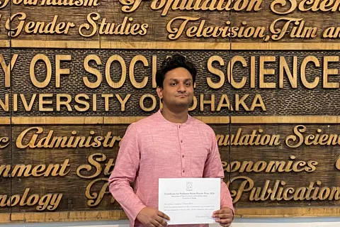

Ali Riaz Postgraduate Research Scholarship
Awarded for the Best Thesis Proposal, recognising research planned for the master's thesis in Mass Communication and Journalism.
Thesis Title
Challenges to Climate Journalism in Bangladesh

Scholarships, prizes, and grants received for research, academic results, and climate journalism work.
Awarded for the Best Thesis Proposal, recognising research planned for the master's thesis in Mass Communication and Journalism.
Thesis Title
Challenges to Climate Journalism in Bangladesh

Awarded a $5000 small grant by the US Department of State to build Coastal Voices, a climate journalism platform.

Awarded for outstanding results in the BSS examination in Mass Communication and Journalism at the University of Dhaka.

Awarded for the highest CGPA in the undergraduate years of the BSS programme, across 2019, 2020 and 2021.